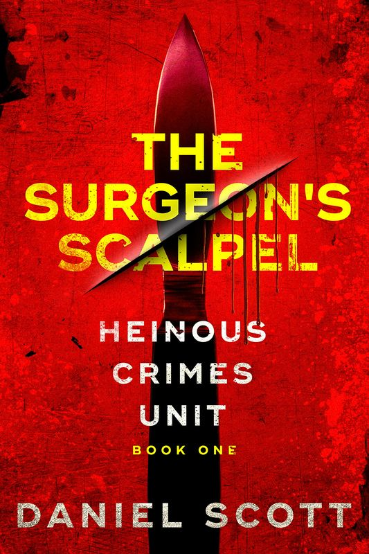

01
Start with The Surgeon’s Scalpel
Best for readers who want an FBI procedural with ritual murders, behavioral profiling, damaged investigators, and a long-running serial-killer arc.
- Series: Heinous Crimes Unit
- Vibe: Criminal Minds dragged through a darker alley
- Hook: Atlanta bartender. One eye carved out. A clue left inside.